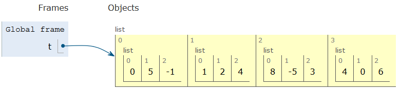

Ressources :
- Documents ressources du DIU EIL, Université de Nantes, Christophe DECLERCQ.
- Spécialité NSI 1re, T. BALABONSKI, S. CONCHON, J.-C. FILLIATRE, K. NGUYEN, éditions ELLIPSES
Germain BECKER & Sébastien POINT, Lycée Mounier, ANGERS 
Les tableaux sont des séquences (comme les tuples, comme les chaînes de caractères) qui permettent de contenir d'autres objets de n'importe quel type (et même de types différents). On peut donc avoir des tableaux de nombres entiers, des tableaux de flottants, des tableaux de chaînes de caractères, etc. Dit plus simplement, un tableau permet de stocker plusieurs variables dans une seule variable et d'y accéder ensuite facilement.
Dans le langage Python, les tableaux sont implémentés par le type prédéfini
list. Ainsi, on trouvera souvent dans la littérature le mot liste plutôt que le mot tableau alors qu'en réalité, ce sont deux types différents (les listes sont étudiées en classe de Terminale). Dans la suite du cours, on utilisera uniquement le terme tableau qui est celui qui apparaît dans le programme et on ne présentera que les notions usuelles des tableaux telles qu'on les trouve dans les autres langages.
Vidéo de cours :
Voici une vidéo très bien faite sur les tableaux : Lumni : cours sur les listes (pensez à remplacer le mot "liste" par le mot "tableau"). Regardez cette vidéo en guise d'introduction à la notion de tableau.
Le cours qui suit reprend les éléments présentés dans la vidéo avec quelques compléments sur le parcours de tableau par valeur et sur la représentation en mémoire d'un tableau qui est différente de celle des types de base.
Les tableaux se déclarent entre crochets et les valeurs sont séparées par des virgules.
tab1 = [1, 5, 10, 20] # un tableau d'entiers
tab2 = [25.0, 17.2, 14.8, 108.7, 137.4] # un tableau de flottants
tab3 = ["Richard", "Baptiste", "0611111111"] # un tableau de chaînes de caractères
tab4 = [True, (10 < 12), ("alpha" >= "beta")] # un tableau de booléens
print(tab1, tab2, tab3, tab4)
Il suffit de ne rien écrire entre les crochets.
tab5 = []
On peut créer un tableau de taille donnée, en l'initialisant par exemple avec des zéros. Pour créer un tableau de taille 15 (initialisé avec des zéros) on écrit simplement :
tab6 = [0]*15
tab6
Les éléments d'un tableau sont indicés, chaque élément a sa place. On accède à un élément d'un tableau en utilisant les crochets et l'indice (ou l'index) de l'élément souhaité : tab[i] renvoie l'élément d'indice i du tableau tab.
tab1 = [1, 5, 10, 20]
tab3 = ["Richard", "Baptiste", "0611111111"]
print(tab1[2], tab1[0])
print(tab3[1], tab3[2])
Remarque importante : il ne faut pas oublier que le premier élément est celui d'indice (ou index) 0 !
Si on cherche à accéder à un élément qui n'existe pas (car l'indice est trop grand), on obtient le message d'erreur IndexError: list index out of range.
tab1 = [1, 5, 10, 20]
tab1[5]
Les tableaux sont des types dits mutables : cela signifie que l'on peut remplacer un élément d'un tableau par un autre (ce qui n'était pas le cas pour les tuples ou les chaînes de caractères).
Exemple
t = [1, 2, 3, 4, 5, 6, 7]
t[2] = 10 # l'élément d'index 2 vaut maintenant 10
t
La taille (ou longueur) d'un tableau, c'est-à-dire le nombre d'éléments qu'il contient, est renvoyée par la fonction len.
tab = [0, 2, 3, 10]
len(tab)
T = ["Albert", "Grégory", "Justine", "Anaïs", "Myriam", "Pascal"]
len(T)
La taille d'un tableau permettra de parcourir les différents élements du tableau avec une boucle for ou while (voir plus loin) et c'est en fonction d'elle que l'on définira le coût d'un algorithme traitant un tableau.
🖊️ Faire les exercices 1, 2, 3, 4 et 5.
Supposons que l'on veuille construire un tableau de taille 100 contenant l'entier $2\times i$ dans sa case d'index $i$. On peut bien sûr le construire de la manière suivante
t = [0, 2, 4, 6, 8, 10, 12, ...] # incomplet (trop long)
mais c'est extrêment fastidieux car il faudrait écrire les 100 valeurs. Il existe deux solutions pour construire ce tableau de manière plus rapide.
for¶La première façon est de créer au préalable un tableau de taille 100 avec une valeur arbitraire (souvent 0) puis de le remplir ensuite avec une boucle for :
t = [0]*100 # création d'un tableau de taille 100 avec que des zéros
for i in range(100): # construction du tableau
t[i] = 2*i
print(t) # affichage du tableau
On peut facilement visualiser cette construction pas à pas avec Python Tutor
Comme c'est une construction qui revient souvent, Python propose une syntaxe plus compacte encore : une construction par compréhension.
Pour construire le tableau précédent par compréhension, l'instruction suivante suffit :
t = [2*i for i in range(100)] # création et construction du tableau
print(t) # affichage du tableau
🖊️ Faire les exercices 6 et 7.
Lorsque l'on veut répéter une opération pour chaque élément d'un tableau t, il est possible de parcourir le tableau avec une boucle for. Cette boucle peut itérer sur les indices des éléments ou directement sur les valeurs des éléments.
La boucle suivante énumère les indices i du tableau t, les éléments correspondants étant récupérés via l'expression t[i].
t = [15, 13, 8, 18, 10]
for i in range(len(t)): # on utilise la fonction len
print(t[i])
Ici, comme len(t) renvoie la valeur 5, alors range(len(t)) crée la séquence d'entiers 0, 1, 2, 3, 4. La variable i prend successivement les valeurs 0, 1, 2, 3 et 4, autrement dit les valeurs des différents indices du tableau.
On peut le visualiser facilement avec Python Tutor.
La boucle suivante énumère quant à elle, les différents éléments e du tableau : elle effectue un tour de boucle pour chaque élément de t et l'élément inspecté à un tour donné est associé à la variable e.
t = [15, 13, 8, 18, 10]
for e in t:
print(e)
On peut aussi le visualiser facilement avec Python Tutor.
Remarques :
range les indices souhaités. Par exemple, pour parcourir seulement les éléments compris entre l'index 1 et l'index 3 (inclus), on écrit :t = [15, 13, 8, 18, 10]
for i in range(1, 4):
print(t[i])
🖊️ Faire les exercices 8, 9 et 10.
Un tableau peut aussi contenir des ... tableaux. Chaque élément du tableau est alors lui-même un tableau, c'est pourquoi on parle d'un tableau de tableaux.
Exemple : Le tableau t qui suit est un tableau dont les éléments sont eux-mêmes des tableaux. C'est un tableau de 4 tableaux.
t = [[0, 5, -1], [1, 2, 4], [8, -5, 3], [4, 0, 6]]
Pour mieux visualiser cette variable comme un tableau au sens classique, on peut aussi la définir ainsi :
t = [[0, 5, -1],
[1, 2, 4],
[8, -5, 3],
[4, 0, 6]]
Avec Python Tutor, on peut bien visualiser le tableau t :

On peut alors accéder à chaque élément du tableau grâce à son index entre crochets mais aussi à chaque élément de chaque sous-tableau comme le montre les exemples ci-dessous.
print(t[0])
print(t[1])
Pour accéder au troisième élément du deuxième sous-tableau (le nombre 4), il faut accéder au deuxième sous-tableau avec l'instruction t[1] (qui est un tableau) puis à son troisième élément avec la notation habituelle entre crochets [2] :
t[1][2] # élément d'indice 2 de l'élément d'indice 1
🖊️ Faire l'exercice 11.
Pour construire un tableau de tableaux, il est très avantageux de le construire par compréhension.
t1 = [[1, 2, 3] for i in range(4)]
t1
t2 = [[i*j for j in range(3)] for i in range(5)]
t2
t = [[0, 5, -1], [1, 2, 4], [8, -5, 3], [4, 0, 6]]
nb_lignes = len(t)
nb_colonnes = len(t[0])
for i in range(nb_lignes):
for j in range(nb_colonnes):
print(t[i][j])
Voici une visualisation avec Python Tutor.
t = [[0, 5, -1], [1, 2, 4], [8, -5, 3], [4, 0, 6]]
for ligne in t: # pour chaque ligne de t
for e in ligne: # pour chaque élément e d'une ligne
print(e)
Voici une visualisation avec Python Tutor.
🖊️ Faire les exercices 12, 13 et 14.
On peut visualiser un tableau comme une suite de cases mémoires contiguës. Cependant, lorsque l'on écrit
t = [1, 2, 3]
cela n'affecte pas 3 cases mémoires à la variable t mais l'adresse mémoire du tableau t. Cela a beaucoup d'importance en Python, il faut se méfier car il y a des différences avec l'utilisation des types de base.
Par exemple avec des entiers, si on écrit
a = 5
b = a
a = 2
print(a, b)
l'instruction b = a va créer une autre case mémoire (que celle de a) pour la variable b dont la valeur vaut celle de a c'est-à-dire 5. Ainsi, lorsque l'on modifie la valeur de a à la ligne suivante, celle de b n'est pas modifiée puisqu'il s'agit d'une case mémoire différente.
On peut voir cela avec Python Tutor.
Si on effectue le même genre d'opérations avec des tableaux, on a un comportement différent.
t = [1, 2, 3]
u = t
t[0] = 5
print(t, u)
L'instruction u = t va créer un nouveau tableau u qui vaut t c'est-à-dire l'adresse mémoire du tableau t. Autrement dit, les deux tableaux partagent la même adresse mémoire. Autrement dit, les deux variables t et u désignent le même tableau. Ainsi, une modification sur le tableau t (ligne 3) sera visible sur le tableau u et réciproquement.
On peut voir cela avec Python Tutor qui matérialise par une flèche les adresses mémoire.
En particulier, lorsque l'on passe un tableau en paramètre d'une fonction, celui-ci peut être modifiée par la fonction, ce qui n'est pas le cas pour des variables de base. Cela sera particulièrement intéressant lorsque l'on triera les valeurs d'un tableau (plus tard dans l'année) mais peut aussi être la source d'erreurs pas évidente à détecter.
[ et ]), les éléments qu'il contient étant séparés par des virgules. i d'un tableau t, s'obtient avec l'instruction t[i].for ou de manière plus rapide par compréhension.for qui peut parcourir les éléments souhaités soit par leur indice, soit par leur valeur.Ressources :
Germain BECKER & Sébastien POINT, Lycée Mounier, ANGERS